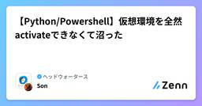
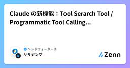

ヘッドウォータースのフィード
https://zenn.dev/p/headwaters
株式会社ヘッドウォータースのテックブログです。 AIエージェント、生成AI、LLM、Azureのサービスや資格、IoT、XR系などData&AIとApp modernizeに関して幅広く投稿します！
フィード

クラウド・バイ・デフォルト原則 とは？
ヘッドウォータースのフィード
執筆日2025/12/06 執筆背景社内メンバーと雑談していた際、「クラウド・バイ・デフォルト原則」という言葉を耳にしました。普段からクラウドサービスを利用する機会は多いものの、「原則」としてどう位置づけられているのか、またその背景や具体的な運用ルールについては詳しく知らなかったため、改めて調べてみることにしました。 参考資料デジタル庁「クラウド・バイ・デフォルト原則」比較表https://www.digital.go.jp/assets/contents/node/basic_page/field_ref_resources/44df7733-3df2-4e47...
14時間前

【Azure】- Microsoft Purviewを作成する際のポイント
ヘッドウォータースのフィード
執筆日2025/12/05 起きたことAzure Portal>Microsoft Purview アカウントでPurviewを作成しようとしたところ。あれ...できない.. 解決方法MarketPlace経由で作成する 手順Marketplaceを開くMicrosoft Purviewと検索し、Microsoft Purviewをクリックサブスクリプションを選び、作成をクリック必要なパラメータを入力し、Microsoft Purviewを作成
1日前

バイオDXとは？AI・ロボットで変わるバイオテクノロジー研究開発の全貌と実務活用法
ヘッドウォータースのフィード
バイオDX（Bio-Digital Transformation）は、バイオテクノロジー領域におけるAIやロボットなどを活用した自動化・効率化の取り組みです。従来のバイオ研究は厳格な規制、24時間体制の細胞管理、膨大なデータ解析など、研究者への負担が極めて重い分野でした。2018年のAlphaFold登場を契機に、AI技術によるタンパク質構造予測が飛躍的に進化。日本でも2021年から文部科学省主導でバイオDXが推進され、創薬、物質生産、ゲノム育種などの分野で自動化研究が加速しています。米国を中心に各国で研究投資が増加しており、今後のバイオテクノロジー産業を変革する重要な技術領域とし...
2日前

AI導入格差が企業の未来を分ける―成功企業が選ぶ次世代AI活用戦略
ヘッドウォータースのフィード
日本企業の約4割が生成AIを導入済みで、AI活用は「定型業務」から「企画創造などの非定型業務」へと主戦場が移行しています。業界・部門によって活用レベルに大きな差があり、情報・専門サービス業や研究開発部門が先行しています。AI導入の課題は初期段階では「コスト・ROI」、活用段階では「セキュリティ・データ品質」へと変化します。すでに成功体験を持つ企業ほど今後の投資意向が高く、AI導入格差が拡大する傾向にあります。https://www.nri.com/jp/media/column/extending_society_with_ai/20251203.html 深掘り 深掘りを...
3日前

Code execution with MCP: Building more efficient agentsを読んでみる
ヘッドウォータースのフィード
本投稿について本記事は、Anthropic社が公開されているEngineering at Anthropic: Inside the team building reliable AI systemsのガイド記事を読んでAI Agent開発の知見を高め、共有していくための記事となります。記事中のわかりにくい用語に関しては、脚注を加えております。本投稿記事で誤りがございましたら、コメントいただけると幸いです。 サマリーMCPはエージェントが多くのツールやシステムに接続するための基礎プロトコルを提供します。しかし、接続されたサーバーが多すぎると、ツールの定義や結果が過剰なトー...
3日前

サービスプリンシパルでaz loginする際の注意点
ヘッドウォータースのフィード
問題事象下記記事を参考にGithub ActionsでAzure Container RegistryにContainerイメージのビルド＆プッシュを試そうとしたのですが、なぜか動きませんでした。https://learn.microsoft.com/ja-jp/azure/container-instances/container-instances-github-action原因を追ってみると、そもそもサービスプリンシパルの情報でaz loginが出来ないことが分かりました。 サービスプリンシパルとはザックリいうと、人ではないアプリケーション（今回でいうとGithub...
4日前

GoogleのAIショッピング機能を徹底解説|便利さの裏に潜む仕掛けと賢い対処法
ヘッドウォータースのフィード
Googleが発表した3つの新AIショッピング機能は、買い物を便利にする一方で、消費者の判断力を奪う可能性があります。AI検索からの直接購入、店舗在庫の自動確認、代理チェックアウト機能により、購入までの「摩擦」が徹底的に排除されています。しかし、この便利さの裏には、ユーザーに「迷う時間」を与えず、最短距離で決済させる仕組みが隠されています。AIは中立なアシスタントを装っていますが、実際には広告収益を目的としたビジネスモデルの一環です。賢い消費者として、AIに判断を委ねすぎず、比較検討する時間を確保することが重要です。https://www.lifehacker.jp/article...
4日前

日清製粉ウェルナのAI需給管理システム導入事例から学ぶDX実践ガイド【物流2024年問題への挑戦】
ヘッドウォータースのフィード
日清製粉ウェルナは、冷凍食品400品目の需給管理を自動化するAIシステムを開発し、計画策定時間を3日から1日に短縮することに成功しました。物流2024年問題に直面する中、熟練担当者の暗黙知を言語化し、AIに定型作業を任せ、人はイレギュラー対応に集中する役割分担を実現。開発パートナーのグリッドと20カ月にわたる密なコミュニケーションを重ね、業務担当者の熱意を確認したうえでプロジェクトを推進しました。AIに100%を求めず、人との協働を前提とした設計思想が、実用的なシステム構築の鍵となっています。https://dcross.impress.co.jp/docs/column/colu...
5日前

Xでのなりすまし被害と対処法：実体験から学ぶアカウント防衛術
ヘッドウォータースのフィード
X(旧Twitter)でエゴサーチをしていたら、自分と酷似したアカウントを発見しました。プロフィール画像、説明文、アカウント名が自分のものと驚くほど似ていた明らかな「なりすまし」でした。この記事では、自分が実際に経験したなりすまし被害とその対処方法について共有します。xでのなりすましは以下のリンクから報告できます。https://help.x.com/ja/forms/authenticity/impersonation/me-or-someone-i-represent/i-am-being-impersonated重要な注意点:なりすましアカウントを見つけても、直接メッセージ...
6日前

Microsoft PurviewでAzure DatabricksのUnity Catalogをスキャンする
ヘッドウォータースのフィード
概要Microsoft Purview（以下Purview）と Azure Databricks Unity Catalog（以下UC）を連携すると、Databricks側のカタログ／スキーマ／テーブルなどの メタデータをPurviewに取り込み、組織全体の検索・可視化・ガバナンスの起点にできます。この記事では、土台となる「データマップ」と「スキャン」の目的を整理し、スキャンを実施してみます。https://learn.microsoft.com/ja-jp/purview/ Purviewの「データマップ」とはデータマップ（Data Map） は、Purviewにおける...
6日前

【Microsoft Foundry】- workflowsって何？
ヘッドウォータースのフィード
執筆日2025/12/1 Workflowsとは？2025年11月のMicrosoft Igniteで発表されたMicrosoft Foundry.Microsoft Foundryに突如現れたWorkflows. まずは作ってみるMicrosoft FoundryをデプロイFoundry portalを開くBuildをクリックWorkflowsをクリック+Create>Black workflowをクリックとりあえず作ってみる保存し、Previewをクリック動かしてみる ノードについてWorkflowsを作成...
6日前

【Azure】PythonからAI Foundryで作成したモデルを呼び出す
ヘッドウォータースのフィード
記事の内容Azure AI Foundryで作成したモデルを呼び出し、PowerShell上でチャットをする。 1. AI Foundryからモデルを作成AI Foundry Portalに入り、ビルドを選択左のリストから『モデル』を選択し、『基本モデルをデプロイする』を選択任意のモデルを検索して選択詳細設定をして、デプロイを選択 2. 使用モデルのEndpointとキーを取得使用するモデルの名前部分を選択『詳細』を選択し、ターゲットURIとキーを取得する 3. 実行環境の作成ディレクトリ構造llm02/├── .venv/ ...
6日前

【Python/Powershell】仮想環境を全然activateできなくて沼った
ヘッドウォータースのフィード
記事の内容Pythonでの仮想環境（venv）を立ち上げようしても全く上手くいかなかったため、その解決方法について記載する。 やりたいこと仮想環境を作成し、起動する。 実行環境VScodePowerShell 1. コマンドで仮想環境を作成python -m venv [仮想環境名] 2. セキュリティポリシーの解除Set-ExecutionPolicy RemoteSigned -Scope CurrentUser -Forcehttps://qiita.com/jugem_373/items/09c2d6abb7ccdd0fee48 3. 仮想環...
7日前

Claude の新機能：Tool Serarch Tool / Programmatic Tool Callingについて解説します
ヘッドウォータースのフィード
本記事について執筆日：2025/11/26!※本記事の内容は執筆時点でパブリックプレビュー版のものを含みます。引用元：https://www.anthropic.com/engineering/advanced-tool-use本記事では、Anthropicが新たにリリースした以下のツールについて解説します。Tool Serarch Tool (ツール検索ツール)：すべてのツール定義を前もってロードするのではなく、必要時に検索して定義を展開する仕組みで、コンテキストウィンドウを消費することなく大量のツールが利用可能になるProgrammatic Tool ...
7日前

【Microsoft 365 Copilot】 Prompt Coachとは？
ヘッドウォータースのフィード
執筆日2025/11/28 プロンプトを作るのが..私はプロンプトを作るのが苦手です。 そこで出会ったのが..Microsoft 365 Copilotのエージェントにいた、Prompt Coach..!!凄そう.. 使ってみたサンプルのプロンプトが6つあります。プロンプトを書くのが苦手な私にとっては便利でした。 プロンプト生成Prompt Coachと会話しながらプロンプトを生成していく会話内容You said:Copilot に使用するプロンプトの生成を手伝ってください。Prompt Coachもちろんお手伝いします！Copilot 用の...
9日前
AI技術でアニメ制作を革新!Creator's Xの19億円調達と業界変革の全貌
ヘッドウォータースのフィード
アニメ制作会社Creator's Xが、シリーズAラウンドで総額19億円の資金調達を完了しました。同社は「創るに没入しよう」をビジョンに掲げ、AI技術を活用してクリエイターの作業負担を軽減し、創作活動に集中できる環境づくりを目指しています。グローバル・ブレインなどからの出資と銀行借入により資金を確保し、アニメ制作会社BENTEN Filmを完全子会社化。K&Kデザイン、スタジオSAIGAと合わせた3スタジオ体制で、制作現場の働き方改革と高品質なアニメ制作の両立を実現していきます。https://prtimes.jp/main/html/rd/p/000000004.00014...
9日前
【Azure】- PTUサイズの見積もりをしたい！
ヘッドウォータースのフィード
執筆日2025/11/27 サイズの見積もり方法 Azure OpenAIAzure OpenAI Serviceを開くクォーター>プロビジョニングされたスループット>容量計算ツール をクリックPTUのサイズの計算を行うことができる Azure AI FoundryAzure AI Foundryを開く管理センターをクリックQuotaをクリックプロビジョニングされたスループット>容量計算ツール をクリック
9日前
【Microsoft Foundry/python】GPT-image-1 と戯れる
ヘッドウォータースのフィード
執筆日2025/11/27 今更ながら..GPT-image-1と戯れようかなと。出たタイミングでジブリ風のアイコンを作っただけで深堀できてなかったので。 できることText-to-imageimage(1枚)×Text-to-imageimage(複数枚)×Text-to-image Text-to-imageプロンプト（Text）を元に画像（image）を生成する方法です。main.pyfrom openai import AzureOpenAIimport os, base64, requestsfrom dotenv import lo...
10日前
【2025年版】デロイトが50億円投資する「リアル研修施設」の狙いとは?生成AI時代に求められるプロフェッショナル人材育成の全貌
ヘッドウォータースのフィード
デロイトトーマツグループが千葉県木更津市に50億~75億円を投じて「デロイトユニバーシティ(DU)」を2029年に開校する計画を発表しました。オンライン研修が主流の時代にあえてリアルな研修施設を作る理由は、生成AI時代にプロフェッショナルに求められる「ソフトスキル」の育成にあります。リーダーシップ、コミュニケーション力、共感力といった非認知能力は、対面での学びと交流を通じてこそ身につくという考えのもと、年間2000人超が学べる本格的な人材育成拠点として構想されています。https://reskill.nikkei.com/article/DGXZQOLM214ZQ0R21C25A1...
10日前
Microsoft Purviewの概要とコストの考え方 in 2025
ヘッドウォータースのフィード
Microsoft PurviewとはMicrosoft Purviewを一言で言うと、社内外に散らばるデータを「見つけて・把握して・守って・正しく使わせる」ための統合データガバナンス／コンプライアンス基盤 です。もう少し噛み砕くと、どこにどんなデータがあるかを棚卸しして可視化（データマップ／カタログ）機密や個人情報を分類して、アクセスや利用ルールを管理監査・eDiscovery・DLPなどでリスク/規制対応まで一体でやるなど、「データの住所録＋保管庫＋ルールブック」をまとめたという感じ。https://learn.microsoft.com/ja-jp/purvi...
11日前